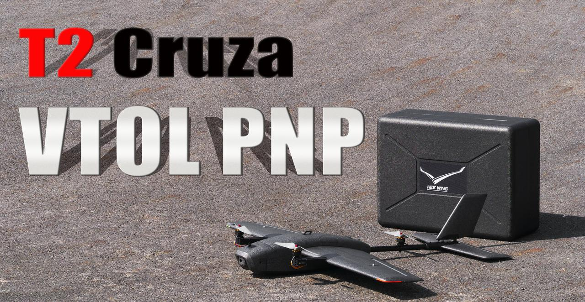
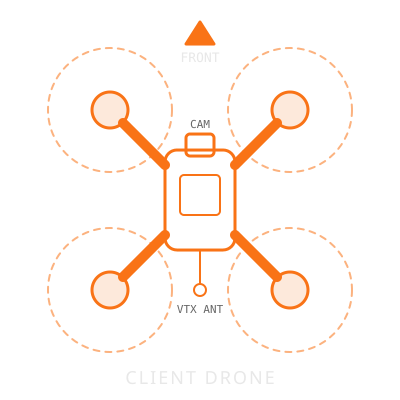
The Heewing T2 Cruza is a fixed-wing tilt-rotor VTOL operating as an airborne relay carrier. The aircraft it serves is the client drone — any analog FPV drone. The carrier extends the client's range by relaying client video (analog VRX → H.264 over the HM30) and client RC (GCS → HM30 → relay bridge → ELRS TX module) between the ground station and the client.
The carrier takes off vertically (VTOL), transitions to fixed-wing cruise and loiters over the client's operating area. Carrier control is Mission Planner over the SIYI HM30 link; a 915 MHz Nomad is close-range backup only. The relay itself is a two-board relay PCB on the carrier — see Aircraft ▾ Relay Electronics. The links are summarised in Reference ▾ RF & Comms.
| Role | Station | Responsibilities |
|---|---|---|
| Carrier Pilot | Primary laptop — Mission Planner (SIYI HM30) + RadioMaster Nomad 915 MHz (close-range backup) |
Takeoff/transition: QHOVER arm → climb → FBWB transition → AUTO. Relay phase: Monitors carrier battery, altitude and link. Adjusts the carrier orbit to keep the client inside the relay coverage — orbit around the client's operating area with the client on the near side. Watches the GCS app status (bridge state, RTT, client LQ, camera state). May switch any mode at any time. Recovery: Takes back Mission Planner for descent and landing. |
| FPV Pilot / Co-Pilot | GCS laptop — GCS companion app + client video viewer (or HDMI goggles) + RadioMaster EdgeTX radio as USB joystick (RF modules OFF) |
Takeoff/transition: Monitors critical telemetry in MP, advances the carrier mission from VTOL_TAKEOFF to WP2 once transition is confirmed. Relay phase: Flies the client through the GCS app with the EdgeTX radio. Watches the client video and the app status bar. Calls client battery, position and link state to the Carrier Pilot verbally. Recovery: Returns the client first, then assists the Carrier Pilot with MP. |
![Diagram D1: the Windows ground station (EdgeTX radio as USB joystick, GCS app sending rc_up to UDP 5770, Mission Planner UDPCI, video viewer on UDP 5601 and MP HUD on 5602) reaches the carrier only over the HM30 IP link. On the carrier the HM30 air unit feeds the FC (MAVLink) and relay switch port P1; P2 net/RC board drives the ELRS TX module over CRSF, P5 video board takes CVBS from the VRX, P3 is the IP camera, P4 spare. Client RC on ELRS 868/915/2.4 GHz; client video analog, band per client. The 915 MHz Nomad is close-range backup only.](img/diagrams/d01-system-overview.svg)
| Link | From → To | Medium | Carries |
|---|---|---|---|
| GCS IP link | HM30 ground ↔ HM30 air | SIYI HM30 | MAVLink, RC UDP, client video RTP, IP camera stream |
| Client video (downlink) | Client VTX → carrier VRX | Analog, band per client (5.8 GHz default) | CVBS PAL / NTSC |
| Client RC (uplink) | Carrier ELRS TX module → client ELRS RX | ELRS 868 / 915 / 2.4 GHz (or Gemini) | CRSF RC, plus telemetry back |
| Carrier backup | Nomad → ELRS RX on the FC | ELRS 915 MHz | RC to ArduPlane — close range only |
The GCS app reads the EdgeTX radio (USB joystick) and sends one 36-byte rc_up packet every 4–5 ms to the RC bridge. The bridge (W5500 + STM32G030) turns it into CRSF frames for the ELRS TX module, timed to the module's own timing frames. The ELRS TX module on the relay is a RadioMaster Nomad (default) or a RadioMaster DBR4 flashed as a TX; its band is set per client. The bridge sends no CRSF until it has received 5 consecutive valid packets, so the module never transmits default sticks at power-up, and it goes silent after T_hold (start value 250 ms) when the GCS stream stops — the client's own failsafe then takes over.
The video board decodes the VRX's composite signal and encodes each field as one H.264 picture, slice by slice, sending RTP on UDP 5600 the moment each slice is ready. Only one Windows process can bind UDP 5600, so the GCS app receives it and re-sends it to 127.0.0.1:5601 (standalone viewer) and 127.0.0.1:5602 (Mission Planner HUD). Mission Planner holds UDP 5600 by default: while the app's fan-out runs, MP must not listen on 5600 — set its HUD source to port 5602 and the standalone viewer to 5601. Expected video standard of the active client: TBD (PAL and NTSC are both supported). No rtpjitterbuffer in the viewer: its default buffering would swamp the latency the relay saves.
The camera only passes traffic while CAM_ENABLE = 1 in the GCS RC stream. It is off at power-up and forced off when the GCS stream is lost; see Relay Electronics → Camera on/off.
The primary control link and the only link whose loss triggers a carrier failsafe (Flight Modes tab). Mission Planner is the carrier's GCS heartbeat: if it is closed, the laptop sleeps or the cable is pulled, the carrier RTLs after 5 s.
Close-range backup control: takeoff, landing, or HM30 trouble near the field. 3-position mode switch QHOVER / FBWB / AUTO; left button RTL — both only work while this link is up, i.e. within close range. Losing it beyond close range is expected and needs no action: the carrier ignores RC while it is absent (THR_FAILSAFE = 2) and stays under Mission Planner control. During a close-in manual phase: take over in MP (QLOITER / QLAND). What QHOVER does when this link drops during a manual phase is not yet tested: TBD — S-01a bench/SITL result (Q15).
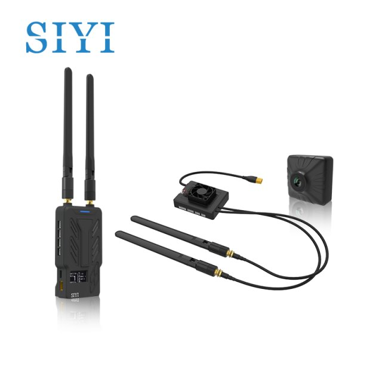
HM30 ground unit on a portable mast, powered by a 6S 3000mAh pack, Ethernet cable to the laptop.
Built from the active client profile and the link profiles (Tools → PROFILES). Unknown values show as TBD.
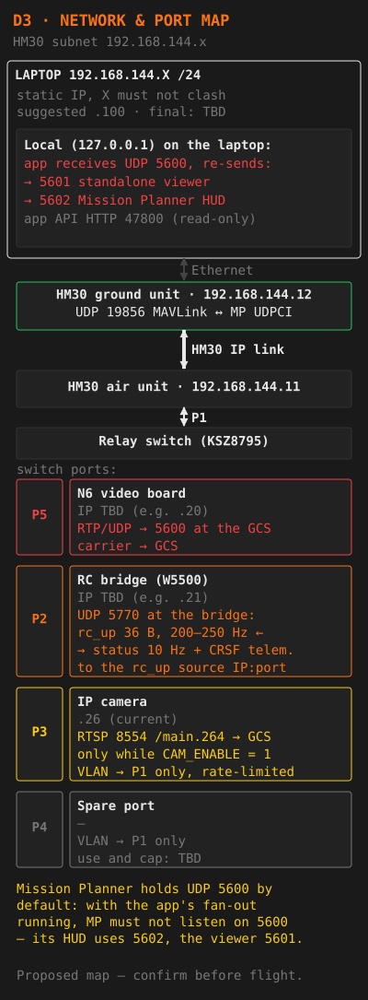
Mission Planner connection: UDPCI, IP 192.168.144.12, port 19856. Laptop Ethernet adapter: static IP 192.168.144.X / 255.255.255.0.
The HM30 radio link is the bottleneck, not the 100 Mbit cable: the switch priorities only order packets on the cable. FPV latency is protected only by keeping the total load below the HM30's measured capacity. Values are TBD until measured (relay-design "UDP echo" test and test 9; open question Q13).
| State | N6 client video (CBR) | IP camera | RC uplink | MAVLink | Margin | Must stay below |
|---|---|---|---|---|---|---|
| FPV mode (camera off) | TBD — set below the measured HM30 capacity | Off (P3 disabled or at minimum) | ≈ 100–130 kbit/s (64 B per packet incl. UDP/IP headers × 200–250 Hz) | TBD | TBD | HM30 capacity TBD (Q13) |
| Camera mode (camera on) | TBD | P3 ingress cap TBD (Q13) | ≈ 100–130 kbit/s | TBD | TBD | HM30 capacity TBD (Q13) |
From the relay design. "Estimate" = calculation or unmeasured value. Measured values go in the last column once relay-design tests 1, 2 and 6 are done.
| Stage | Time | Basis | Measured |
|---|---|---|---|
| Field arrives, 288 lines × 64 µs | 18.4 ms | Set by the signal (only the top line waits this long) | TBD — test 1 |
| Last slice encoded | about 0.5 ms | Estimate | TBD — test 1 |
| Packets sent, 10–30 kB at 100 Mbit/s | 0.8–2.4 ms | Ethernet transmit | TBD — test 1 |
| Switch forwarding P5 → P1 | well under 0.1 ms | Estimate | — |
| HM30 link | about 150–180 ms | Estimate from an earlier analysis, unmeasured | TBD — test 2 |
| GCS decode and display | 10–50 ms | Estimate; depends on the PC and display | TBD — test 2 |
| Glass-to-glass | — | Relay electronics add about 20 ms; the HM30 and the GCS dominate | TBD — test 2 (mean and worst case) |
| Stage | Time | Basis | Measured |
|---|---|---|---|
| Controller to GCS app (USB HID) | 1–8 ms | Estimate; depends on the controller's polling rate | TBD — measure on the target laptop |
| GCS send period at 200–250 Hz | 4–5 ms | Sent on absolute deadlines | TBD — app send-jitter log |
| HM30 uplink | unknown | Measure with the UDP echo test | TBD — UDP echo |
| Switch, W5500 and G0 processing | under 1 ms | Estimate | — |
| Wait for the next CRSF slot | up to one CRSF period (4–5 ms) | G0 locks to the ELRS timing frame | — |
| CRSF frame, 26 B at 400 kbaud | about 0.65 ms | Calculation | — |
| ELRS air packet and client RX | one ELRS packet interval | Set by the ELRS packet rate (client profile: TBD Hz) | — |
| Time to client failsafe | T_hold (start 250 ms) + TX module reaction + client RX failsafe timeout | Only T_hold is designed | TBD — test 6, per cause |
The physical Nomad controller has a 3-position mode switch only. The left button is mapped to RTL. Both work only while the 915 MHz backup link is up — usable only within close range. Beyond close range, command modes from Mission Planner.
| Source | Input | Mode | Use |
|---|---|---|---|
| Nomad switch | Position 1 | QHOVER | Takeoff, landing, VTOL hold. Altitude locked. Default arm mode. |
| Nomad switch | Position 2 | FBWB | Fixed-wing cruise, altitude hold. Used for transition and pre-AUTO. |
| Nomad switch | Position 3 | AUTO | Mission execution. Activated after transition confirmed. |
| Nomad left button | Press (emergency) | RTL | Return to home at RTL_ALTITUDE (120m REL). Only within close range. |
| GCS only | Mission Planner | GUIDED | Position-controlled flight. Carrier Pilot uses it for relay orbit adjustments. |
| GCS only | Mission Planner | QLOITER / QLAND / RTL | Take-over modes when the 915 link is lost during a close-in manual phase (S-01a). |

FS_LONG_TIMEOUT = 5 → FS_LONG_ACTN = 1 → RTL, in any mode (FS_GCS_ENABL = 2).RTL_ALTITUDE (120m REL, above home), return home, then back-transition and land per the Q settings. Behaviour when RTL triggers while in a Q-mode: TBD — check Q_RTL_MODE / Q_OPTIONS in the param file, then SITL test (S-02).The 915 MHz Nomad is used only within close range. The carrier camera is forced off with the GCS stream and does not help to watch the client return.
The SIYI failsafe tracks heartbeats from the primary GCS. Closing or crashing Mission Planner, letting the laptop sleep or hibernate, or pulling the Ethernet cable all look like "GCS lost" → RTL after 5 s. That is correct behaviour, but it must not happen by accident:
- Never close Mission Planner in flight.
- Power plan: never sleep or hibernate, on battery or mains. Lid-close action: "Do nothing". Laptop on mains where possible.
- The GCS app keeps Windows awake only while it streams RC, and this does not cover closing the lid. It warns
GCS LAPTOP ON BATTERY/GCS BATTERY SAVER ON.
No other program may send GCS heartbeats as MAVLink sysid 255 (the Mission Planner default, the primary GCS id). It would keep the carrier "happy" while MP — the real control path — is dead, and mask the SIYI failsafe. The GCS companion app never sends MAVLink to the carrier: it reads a copy of MP's stream (MAVLink Mirror, write access off), and it may send a display-only client stream to Mission Planner with its own sysid (never 1 or 255).
FS_GCS_ENABL = 2 also fails safe when an HM30 RADIO_STATUS reports remrssi = 0. Whether the HM30 sends RADIO_STATUS at all is unknown (Q2). Check procedure:
Normal UDPCI connection over the HM30, carrier powered.
In Mission Planner press Ctrl-F → MAVLink Inspector.
Is there a RADIO_STATUS message, and from which system/component? Note its remrssi value with the link up.
Result: TBD — S-02c / Q2. If the HM30 does not send it, value 2 behaves like 1 (heartbeat only). Either result is consistent with the design intent.
There is no RC failsafe action on this aircraft: THR_FAILSAFE = 2 means RC inputs are ignored when RC failsafe is detected, with no failsafe action. So no RC-loss timeline applies here.
| Parameter | Value | Meaning on this aircraft |
|---|---|---|
THR_FAILSAFE | 2 | EnabledNoFailsafe — RC ignored on RC loss, no action (by design) |
THR_FS_VALUE | 950 | Throttle channel value below which RC loss is detected |
FS_SHORT_ACTN | 0 | CIRCLE / no change if already in AUTO, GUIDED or LOITER — not FBWA (FBWA is 2). Only reachable through an RC failsafe, which is disabled by design. |
FS_LONG_ACTN | 1 | RTL — used here as the GCS (SIYI) failsafe action |
FS_LONG_TIMEOUT | 5 s | Used here as the GCS (SIYI) failsafe delay |
FS_GCS_ENABL | 2 | HeartbeatAndREMRSSI — GCS failsafe in all modes |
What the aircraft does if the 915 link drops while the pilot flies it with the Nomad (QHOVER takeoff or landing) has not been tested. With THR_FAILSAFE = 2 the RC input is ignored; whether QHOVER then holds altitude and position or drifts is unknown.
QHOVER, armed. Switch the Nomad off. Record what MP shows: mode, throttle and attitude targets.
TBD — S-01a bench/SITL result (Q15)
Take over in Mission Planner: QLOITER or QLAND.
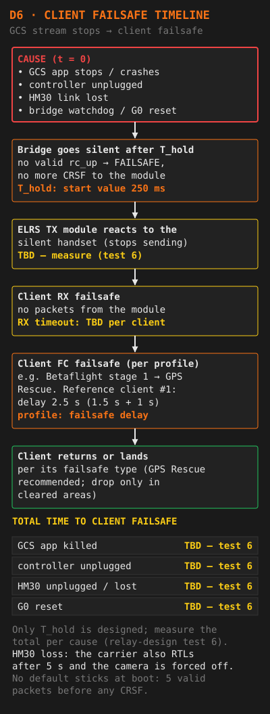
VTOL assist activates automatically in fixed-wing modes when airspeed drops below 9 m/s (Q_ASSIST_SPEED) or when altitude is below 25m (Q_ASSIST_ALT; altitude reference VERIFY — ArduPlane docs, S-04). If VTOL assist triggers unexpectedly during cruise, check for airspeed sensor failure or gusty conditions.

| Board | Main parts | Job |
|---|---|---|
| Net/RC board | Microchip KSZ8795 5-port Ethernet switch · WIZnet W5500 (UDP/IP) · STM32G030 bridge MCU (“G0”) · input protection · 3.3V_RC and VBAT_TX regulators | Owns every external Ethernet and CRSF connection. The bridge receives rc_up on UDP 5770 and drives the ELRS TX module over single-wire CRSF, locked to the module's timing frames. Configures the switch over SPI. |
| Video board | CVBS input · TI TVP5150AM1 decoder (default; Renesas TW9900 alternative footprint) · STM32N657 (“N6”) with hardware H.264 encoder | Turns the VRX's analog video into H.264, one picture per field, and sends RTP/UDP to the GCS on port 5600 through switch port P5. |
The two boards share only the input supply and one RMII link (P5). RC packets enter at P1 and leave at P2 inside the switch — the RC path never touches the N6. So RC keeps running while the video board is reset, reflashed or crashed. Port VLANs keep camera and spare-port traffic, including broadcast storms, away from the RC bridge. Relay-design test 5 proves this (N6 held in reset, reflashed, video domain power-cycled, P3 flooded with broadcast traffic: zero dropped CRSF frames).
Carrier control (Mission Planner over the HM30 to the FC) does not pass through the relay PCB.
| Port | Connects to | Medium / connector | VLAN (reaches) | P1 egress priority |
|---|---|---|---|---|
| P1 | HM30 air unit | Switch PHY → 10/100 transformer → HM30 Ethernet connector (pinout per the HM30 manual) | Uplink: all relay traffic to and from the GCS | — (P1 is the egress port) |
| P2 | W5500 — RC bridge | PHY-to-PHY, capacitor-coupled, no transformer (on the board) | P1 only | 1 — RC status (highest) |
| P3 | Carrier IP camera | Transformer → JST-GH 4-pin TX+, TX−, RX+, RX− | P1 only (and P5 if needed) | 3 — camera (lowest). Ingress rate limit TBD (Q13); on/off by CAM_ENABLE |
| P4 | Spare | Transformer → JST-GH 4-pin TX+, TX−, RX+, RX− | P1 only (and P5 if needed) | TBD — what may be connected, and its bandwidth cap: TBD |
| P5 | STM32N657 (video board) | RMII MAC-to-MAC through the board-to-board connector, fixed 100 Mbit full duplex | P1 (client video) | 2 — client video |
The G0 configures the switch over SPI at boot and re-applies the settings whenever the switch resets. The priorities use the switch's four priority queues on P1's egress. They only order packets on the cable — the HM30 radio is the real bottleneck (see RF & Comms → Bandwidth budget).
- Command: bit 0 of the
rc_upflagsbyte isCAM_ENABLE. The G0 applies a change within one packet. - Off: P3 receive disabled, or its ingress rate limit set to the minimum. On: P3 enabled, capped by its ingress rate limit.
- The camera stays powered, so it resumes at once — no reboot.
- Default off at power-up, and kept off if the GCS stream is lost.
- The G0 reads the switch registers back after every write and reports the read-back state in the 10 Hz status packet, so the GCS shows what the switch really does.
GCS app: camera request default OFF; key k toggles the request; the app shows requested and reported state and raises CAMERA STATE MISMATCH if they differ for more than 1 s. With its default setting the app refuses camera ON while the client is (or may be) armed (until relay-design test 9 has passed, Q13).
Owner decision (Q12): switching the camera off is only needed while a client is connected. Proposed G0 behaviour:
| Bridge situation | Camera (P3) |
|---|---|
| No valid GCS RC stream since boot (carrier-only, no client) | ON (at its P3 ingress cap) |
| RC stream running | Follows CAM_ENABLE (app default: off while the client is armed) |
| RC stream lost after having run (client in failsafe) | OFF — protects the client's video during its return |
| New stream after loss | Follows CAM_ENABLE again |
Until this firmware change exists, a carrier-only flight has no camera unless the GCS app streams in its carrier-only mode — see Procedures → Carrier-only flights for its hazard.

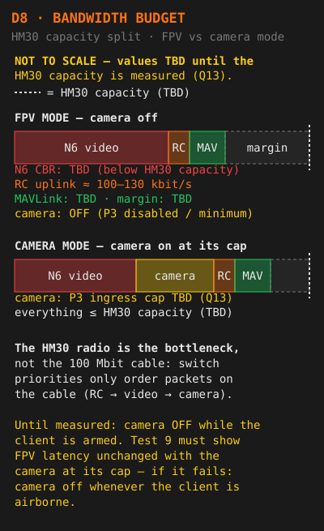
| State | Sends CRSF | Leaves when | Bridge LED pattern |
|---|---|---|---|
BOOT | No | Peripherals and W5500 are up → WAIT_GCS | TBD — firmware |
WAIT_GCS | No | 5 consecutive valid packets → START | TBD — firmware |
START | ModelID × 3 | Done → RUN | TBD — firmware |
RUN | RC frames on every scheduler tick | No valid packet for T_hold (start value 250 ms) → FAILSAFE | TBD — firmware |
FAILSAFE | No (silent) | Immediately → WAIT_GCS | TBD — firmware |
A packet is valid only with the right magic, version, CRC, source IP and an increasing sequence number. The bridge locks its CRSF timing to the ELRS module's timing frame (0x3A), so each RC frame arrives just before the module's next RF transmission. A watchdog (about 100 ms) resets the G0 if its scheduler or the W5500 stops. The bridge reports every forwarded CRSF frame plus a 10 Hz status packet (state, counters, echoed time stamp for RTT, sync period and offset, camera read-back) to the GCS.
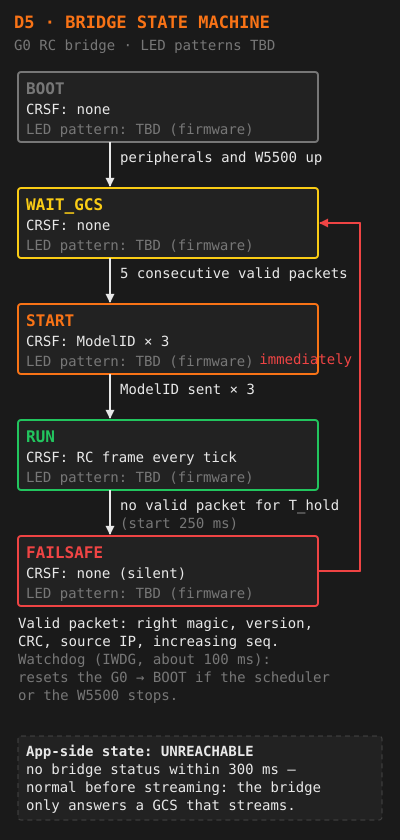
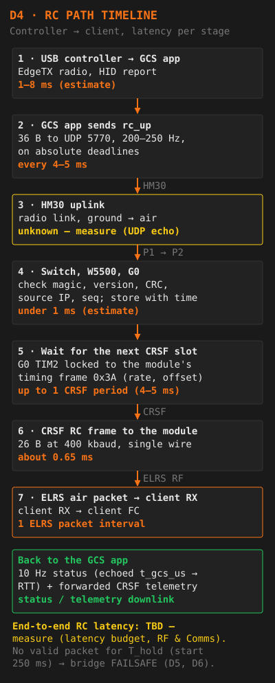
| Standard | Encoded size | Slices of 32 lines | Field rate | Field time |
|---|---|---|---|---|
| PAL | 704 × 288 | 9 | 50 Hz | 18.4 ms (288 lines × 64 µs) |
| NTSC | 704 × 224 (cropped), or 704 × 240 if 16-line slices work | 7 | 59.94 Hz | 15.3 ms |
Each field is one H.264 picture, encoded slice by slice and sent the moment each slice is finished, so the relay adds about one field time. H.264 Baseline at a constant bitrate below the HM30's measured capacity (TBD — Q13). If no field arrives for 25 ms the last field is re-sent; if the decoder loses lock for more than 1 s it is reset. Encoder stability and recovery are relay-design tests 3 and 4.
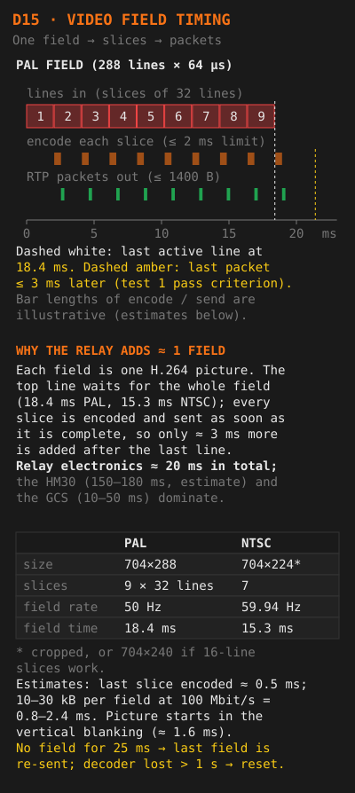
| Board | LED | Meaning |
|---|---|---|
| Video board (N6) | LED on PG8 | Heartbeat |
| Video board (N6) | LED on PG10 | Decoder lock |
| Video board (N6) | LED on PG0 | Ethernet link |
| Net/RC board (G0) | RC state LED | Bridge state — patterns per state: TBD — to be defined by the bridge firmware |
| Net/RC board (G0) | Link LED | TBD — to be defined by the bridge firmware |
| Switch | P1 link | Link to the HM30 air unit is up (bring-up check) |
The GCS app is the primary indicator in flight: bridge state, RTT, camera read-back and (once the firmware reports it) decoder lock.
| Connector | Board | Type | Purpose |
|---|---|---|---|
| Power in | Net/RC | XT30 | Aircraft bus, 6–26 V (full 6S = 25.2 V) |
| HM30 Ethernet | Net/RC | Per HM30 manual | Switch port P1 |
| IP camera Ethernet | Net/RC | JST-GH 4-pin: TX+, TX−, RX+, RX− | Switch port P3 |
| Spare Ethernet | Net/RC | JST-GH 4-pin: TX+, TX−, RX+, RX− | Switch port P4 |
| CRSF | Net/RC | JST-GH 4-pin: VBAT_TX, GND, CRSF, spare | ELRS TX module |
| CVBS in | Video | SMA + JST-GH 2-pin | VRX |
| N6 debug | Video | STDC14 (1.27 mm, 14-pin) | STLINK-V3MINIE (also the N6 console) |
| G0 debug | Net/RC | 4-pin SWD or Tag-Connect | Programming the bridge |
| N6 spares | Video | 8-pin 2.54 mm | SP1–SP6, 3V3, GND |
| Boot select | Video | Two 3-pin jumpers | BOOT0, BOOT1 |
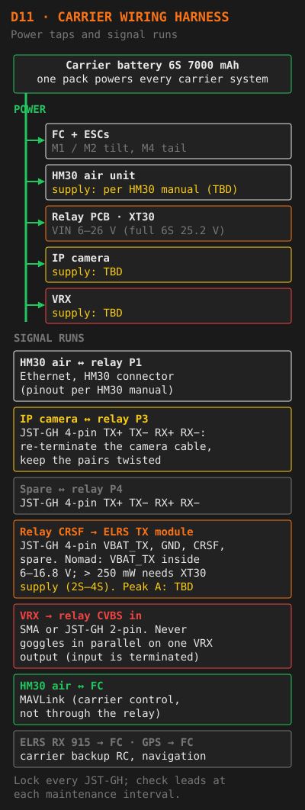
| Item | Value | Source / note |
|---|---|---|
| Relay input (VIN) | 6–26 V (2S–6S; full 6S = 25.2 V) | Fuse, reverse-polarity FET and TVS on the net/RC board; shared by both boards, each regulates its own rails |
| VBAT_TX (ELRS TX module supply) | Separate regulator, at the module's voltage | RadioMaster Nomad (retail spec): XT30 input 6–16.8 V; outputs above 250 mW need the XT30 supply (2S–4S). VBAT_TX must be inside 6–16.8 V. Peak current: TBD — datasheet or measurement |
| DBR4 flashed as TX (option) | TBD | Different supply needs and much lower output power — check its spec |
| Relay consumption | TBD — relay-design test 8 | Test 8: 30 minutes in a closed box; total under the aircraft budget, MCU case below 85 °C |
| Effect on carrier endurance | TBD | From the measured consumption |
| Item | Where to read it | Current |
|---|---|---|
| Bridge firmware (STM32G030) | Bridge status packet fw_ver → GCS app status / Tools LINK tab “BRIDGE FW”; session log bridge_state records | TBD |
| Video firmware (STM32N657) | N6 console (ST-LINK virtual COM port on the STDC14 debug header) | TBD |
| Relay protocol | ver byte of rc_up and status | 1 (PROPOSAL) |
| GCS companion app | App console / /api/v1/health / Tools LINK tab “APP” | TBD |
| Bridge firmware that reports decoder lock and video standard | App setting video.status_bits_min_fw_ver | TBD — firmware request |
Compatibility: the GCS app and the bridge must use the same protocol ver. Record every version change in the firmware log (Maintenance).
| # | Test | Pass criterion | Measured |
|---|---|---|---|
| 1 | Video device latency: scope on decoder VSYNC and the latency-marker GPIO | Last packet ≤ 3 ms after the last active line | TBD |
| 2 | Glass-to-glass video: stopwatch filmed at 240 fps with the GCS screen, 20 samples | Record mean and worst case | TBD |
| 3 | Encoder stability, 30 minutes clean signal | Zero FUSE_ERROR, zero missing fields | TBD |
| 4 | Noise bench: VTX → step attenuator → VRX, down to full snow; both decoders | No stall or freeze; recovery ≤ 100 ms after signal returns | TBD |
| 5 | Independence: hold the N6 in reset, reflash it, power-cycle the video domain, and flood P3 with broadcast traffic | Zero dropped CRSF frames | TBD |
| 6 | Failsafe: kill the GCS app, unplug the HM30, reset the G0 | Client reaches its failsafe; record the time for each case | TBD |
| 7 | Co-site RF: VRX picture and RSSI with HM30, TX module and Ethernet running at full power | No visible degradation; note the cleanest analog channel | TBD |
| 8 | Power and thermal: 30 minutes in a closed box | Total under the aircraft budget; MCU case below 85 °C | TBD |
| 9 | Camera on/off: camera streaming at its cap, toggle CAM_ENABLE from the GCS, repeat test 1 with the camera on | FPV latency unchanged with the camera on at its cap; camera traffic on P1 stops within one RC packet of switching off | TBD |
The GCS app helps with tests 6 and 9: after every stream stop it prints and logs the observed stop → FAILSAFE time (failsafe_timing), and it logs RTT continuously. Tests 5 and 9 are repeated periodically (Maintenance).
The T2 Cruza is a tri-motor tilt-rotor (Q_FRAME_CLASS 7 = Tri). It has 3 motors: the two wing motors M1/M2 tilt forward and provide both VTOL lift and fixed-wing thrust — they are the propulsion in both flight modes. The tail motor M4 provides VTOL lift only and stops when the transition to fixed-wing flight is complete. There is no separate forward-thrust motor.
| Parameter | Value | Meaning |
|---|---|---|
Q_TILT_MASK | 3 | Motors 1 & 2 (wing motors) tilt |
Q_TILT_TYPE | 2 | Tilt-rotor type |
Q_TILT_MAX | 80° | Tilt angle held during the forward transition until the transition airspeed is reached; in fixed-wing flight the tilt motors go fully forward (ArduPilot tilt-rotor guide). VERIFY — against the param file and firmware in use |
Q_TILT_RATE_UP/DN | 40 deg/s | Tilt rotation speed |
Q_FRAME_CLASS | 7 | 7 = Tri (M1, M2, M4) |
Q_FRAME_TYPE | 1 | Frame type as set — VERIFY meaning for frame class 7 against the param file |
Q_M_THST_HOVER | 0.272 | Learned hover thrust (~27.2% throttle) |
Q_FRAME_CLASS 7): M1/M2 tilt, M4 lift only. Prop directions: TBD — confirm on the airframe (ArduPilot: the front pair must turn in opposite directions, or roll and pitch inputs cause adverse yaw).| Parameter | Value | Meaning |
|---|---|---|
Q_TRANSITION_MS | 3000 ms | Forward transition time window |
Q_TRANS_FAIL | 4s | Transition failure timeout if airspeed is not reached |
Q_TRANS_FAIL_ACT | 0 = QLand | Automatic action on transition failure: QLand at the current position — not QHOVER (ArduPlane source: -1 warn only, 0 QLand, 1 QRTL). VERIFY — against the firmware version in use |
Q_BACKTRANS_MS | 10000 ms | Back-transition window (FW → VTOL) |
Q_ASSIST_SPEED | 9 m/s | VTOL assist activates in FW modes below this speed |
Q_ASSIST_ALT | 25m | VTOL assist activates below this altitude (reference: VERIFY) |
| Parameter | Value | Meaning |
|---|---|---|
AIRSPEED_CRUISE | 13 m/s | Target cruise speed (46.8 km/h) |
AIRSPEED_MIN | 11 m/s | Stall prevention threshold |
AIRSPEED_MAX | 22 m/s | Maximum airspeed (79 km/h) |
TECS_CLMB_MAX | 5 m/s | Maximum climb rate |
TECS_SINK_MAX | 5 m/s | Maximum sink rate |
TRIM_THROTTLE | 35% | Cruise throttle setting |
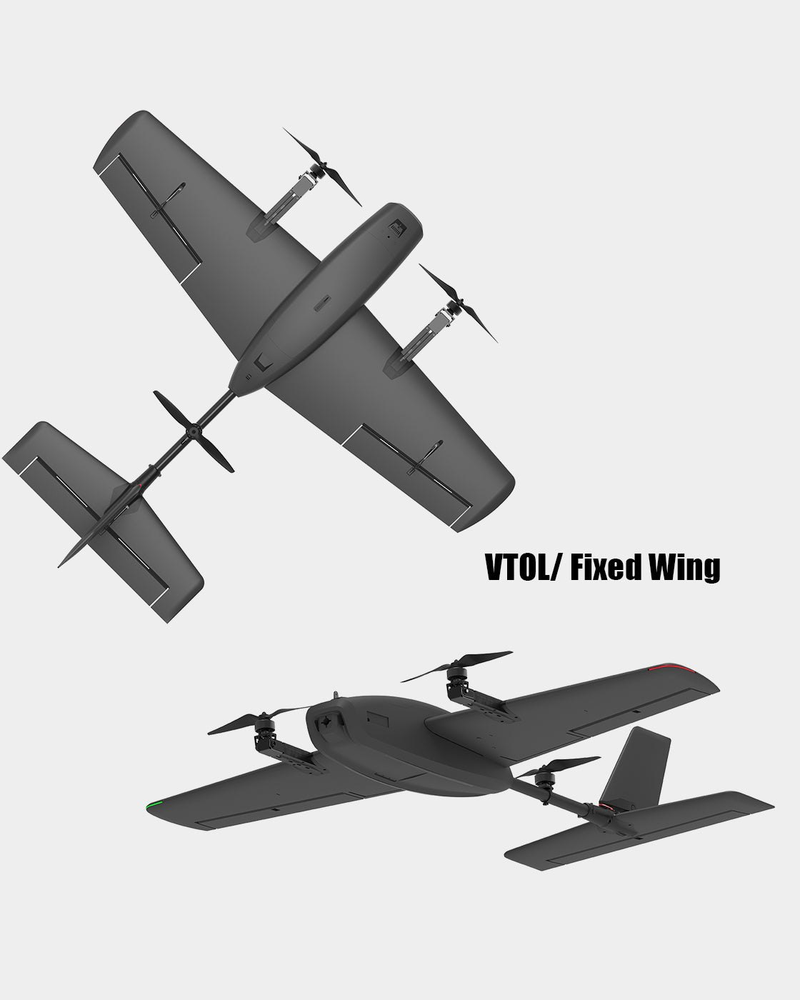
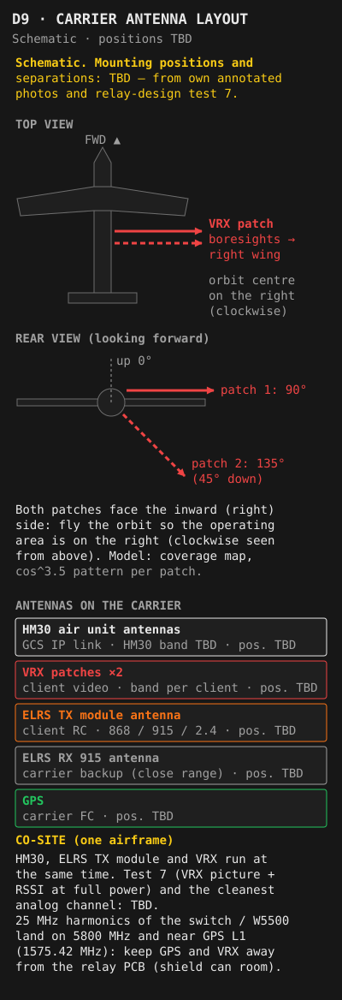
| Parameter | Value | Notes |
|---|---|---|
| Carrier battery | 6S 7000mAh | Single pack powers all carrier systems: FC, ESCs, HM30 air unit, relay PCB, IP camera |
| Mast battery | 6S 3000mAh | Powers HM30 ground unit only |
BATT_CRT_VOLT | 22.2V | 3.7V/cell nominal — triggers Loiter→QLand |
BATT_LOW_VOLT | 0 — NOT SET | No warning voltage configured |
RTL_ALTITUDE | 120m | Fixed-wing RTL altitude, above home (REL) |
Q_RTL_ALT | 70m | VTOL RTL altitude (REL) |
Q_RTL_ALT_MIN | 35m | Minimum VTOL RTL altitude (REL) |
Battery gauge is drawn from the carrier pack profile — if this text stays, the page scripts did not load.
These 7 waypoints must be loaded and verified before every flight. The altitude profile below shows the intended flight path. All altitudes are REL (above home).
| WP | Type | Purpose | Pilot action |
|---|---|---|---|
| 1 | VTOL_TAKEOFF | Vertical takeoff | Arm, hold QHOVER until transition altitude achieved |
| 2 | WAYPOINT | Transition safety altitude | Co-pilot advances mission from WP1 once transition confirmed. Altitude must give clearance if transition is incomplete. |
| 3 | LOITER_TO_ALT | Climb to relay altitude | Autonomous. Monitor airspeed and climb rate. |
| 4 | WAYPOINT | Mission start point | Sortie-specific. Pilots configure this per flight before departure. |
| 5 | LOITER_TO_ALT | Descend to approach altitude | Autonomous on return leg. |
| 6 | WAYPOINT | Slope-in toward landing zone | Low altitude — confirm landing zone clear before this WP. |
| 7 | VTOL_LAND | Vertical landing | Monitor descent, ready to override to QHOVER. |
| Parameter | Normal | Abort (switch QHOVER) |
|---|---|---|
| Airspeed build | Reaches 13 m/s within 3s | No build within 3s → QHOVER. If nobody acts, Q_TRANS_FAIL (4s) → automatic QLand at the current position (VERIFY) |
| Altitude loss | Up to ~5m — expected and normal | Loss >10m → QHOVER immediately |
| Pitch attitude | Slight nose-down (1–3°) as speed builds | Aggressive dive → QHOVER immediately |
| M1/M2 tilt | Smoothly rotate forward over ~3s | One-sided tilt, jerk, or stall sound → QHOVER |
| M1/M2 forward thrust | Thrust builds audibly as the wing motors tilt forward | No thrust build → QHOVER, check ESCs |
| Transition complete | M4 tail motor stops; M1/M2 fully forward. Aircraft in FW flight. | M4 still running at cruise alt → investigate |
| Back-transition | 10s window, M1/M2 tilt smoothly back to vertical | Oscillation during back-transition → QHOVER override |
Mast unit on (6S 3000mAh). Confirm the HM30 link LED.
Static IP verified (192.168.144.X, see the network table) → GCS companion app started → EdgeTX radio connected as USB joystick; arm switch DISARMED; throttle low. The app enforces this for a normal start.
Client powered → VTX on the planned band/channel (R5 · 5806 MHz) → ELRS RX waiting for the relay.
Connect the single 6S pack: FC, HM30 air unit, relay PCB and camera boot together. Wait for the ArduPlane boot tone. Allow GPS fix time from here, before arming. Bridge: BOOT → WAIT_GCS → START (ModelID ×3) → RUN once the app's stream is seen. The client RX links (bound by binding phrase — no per-flight bind).
Connect UDPCI 192.168.144.12 : 19856. Telemetry live.
GStreamer viewer (UDP 5601) or MP HUD (UDP 5602) shows the client picture.
Switch the camera on in the GCS app → carrier camera RTSP picture shows → the app reports camera ON (read-back). Then set it to the state planned for the sortie — normally OFF before the client launches, unless relay-design test 9 has passed.
Power the Nomad. RC visible in Mission Planner, no pre-arm errors.
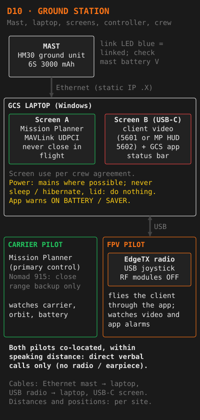
NOCLIENT confirmation (no client powered or bound), refuses it while any client telemetry was heard in the last 30 s, and asks for LANDED as well after any FPV stream in the same app session.Nomad switch position 1. Confirm in Mission Planner HUD.
Stick arm (Nomad) or GCS arm. All 3 motors (M1, M2, M4) spool to min arm thrust. Confirm no pre-arm messages.
Confirm stable hover, no oscillation. Confirm SIYI link (MP telemetry live) and 915 RSSI acceptable. Co-pilot confirms telemetry nominal in MP.
Climb in QHOVER to ≥25m REL. Wind vane active — aircraft weathervanes into wind automatically.
Nomad switch position 2. M1/M2 tilt motors begin rotating forward and build forward thrust.
Target 13 m/s. Minimum 11 m/s. No airspeed build within 3s: QHOVER immediately.
M4 tail motor stops. Aircraft in fixed-wing flight. Co-pilot advances mission to WP2.
Nomad switch position 3. Carrier Pilot takes over MP monitoring. Co-pilot clears to operate the client.
Carrier in AUTO loiter. Bridge RUN, client video in the viewer, client LQ shown in the app (if telemetry is enabled). FPV Pilot takes the EdgeTX radio and flies the client.
Watch the app status bar: RTT, client LQ, bridge state, camera state. Call "RC LINK DEGRADED" at the alarm thresholds (RTT threshold TBD — inactive until the HM30 RTT is measured; LQ < 70 %). Every app alarm has a callout (Pre-Arm Ref → Relay & GCS app).
Primary duty — keep the client inside the relay coverage. Orbit around the client's operating area with the client on the near side. If the client approaches the coverage edge: call "RELAY EDGE" and vector the carrier in via GUIDED mode.
No BATT_LOW_VOLT configured — manual voltage monitoring only. Target RTL at 23.0V. Hard limit: RTL in progress before 22.5V. At 22.2V: automated Loiter→QLand at current position.
Carrier Pilot requests the camera.
FPV Pilot confirms the client is in a stable hover or landed. Note: with its default setting the app refuses camera ON while the client is (or may be) armed — until relay-design test 9 has passed, in practice this means client landed and disarmed.
Camera switched in the GCS app (key k); check that the app reports the same state as requested. Call "CAMERA ON" / "CAMERA OFF".
The app warns RTT RISING - CAMERA ON if the HM30 starts to saturate — switch the camera off.
| Path | When | How |
|---|---|---|
| Normal start | Client on the ground, disarmed | Controller connected, arm switch DISARMED, throttle low → FPV mode (f, --mode fpv), or r to restart a stopped stream. The start interlock refuses otherwise and lists the reasons. |
| RESUME (client airborne) | Client may be flying — in failsafe or GPS Rescue after the bridge went silent, or after the app crashed or was restarted | Hold the arm switch ARMED → R / --resume → the app shows the live arm and throttle values (nothing is sent) → type RESUME within 15 s; with the throttle at minimum also type THROTTLE. The client then gets exactly the controller values. With the arm switch SAFE, RESUME is refused. |
Client airborne: never use the normal start. Its first packet carries the DISARMED arm switch and would disarm the client in mid-air. Use RESUME only if taking over is safer than letting the client's own failsafe finish; otherwise leave the app stopped until the client is on the ground. A stopped stream stays stopped even when the controller comes back. The app shows the start path in use (Tools LINK tab: START NORMAL / START RESUME (CLIENT AIRBORNE)). Keys are those of the headless runtime; the windowed app follows (WP08b).
There is no bind before each flight. The ELRS binding phrase is set once on the relay's ELRS TX module (Nomad, or DBR4 flashed as TX) and on each client receiver. Model match / ModelID is set per client, so the module only controls the client whose model id matches; the bridge sends the ModelID three times when it starts.
Set the same binding phrase on the TX module and the client RX. Set model match and the client's model id (client profile: TBD).
Packet rate, TX power, band / Gemini, telemetry ratio, model match and VTX Admin are set on the module: today through the module's WiFi web UI on the bench. From the GCS app's CRSF parameter menu once the bridge forwards GCS → module CRSF frames (firmware request Q7a) — TBD.
Check only: bridge RUN, client linked (LQ in the app or on the client OSD), video in the viewer.
The EdgeTX radio is used only as a USB joystick. Its internal and external RF modules must be OFF in the relay model. A co-located radio transmitting ELRS with the same binding phrase could fight the relay for control of the client.
- Dedicated EdgeTX model "GCS-RELAY": internal RF OFF, external RF OFF, USB mode Joystick, Classic.
- Mixer: AETR on CH1–4, arm switch on a fixed channel (the app checks CH5 by default — reference client ARM on AUX1 = CH5), modes and beeper on CH6–8. The client's channel order is set in EdgeTX, not in the app.
- Replug USB after changing joystick settings. On Windows the radio may appear only as "Joystick".
- EdgeTX Lua scripts (e.g. the ELRS script) cannot reach the relay's TX module — the radio is not connected to it.
Co-pilot returns the client first where possible. Call "FPV LANDED" once landed and disarmed.
Mission WP5 → WP6 → WP7 (VTOL_LAND). Or RTL from Mission Planner; the Nomad left button only within close range.
10s window. M1/M2 tilt back to vertical. If oscillation appears: switch QHOVER manually.
Final descent at Q_LAND_FINAL_SPD = 0.2 m/s. Confirm landing zone clear. Disarm on touchdown.
Save the GCS app session log (RC out, status, telemetry, alarms) for the debrief.
Emergency cards are rendered from data/content.js — if this text stays, the page scripts did not load: use the Tools page emergency modal.
Type any part of a message to filter all tables on this page.
ARSPD_TYPE=4, AHRS_GPS_MINSATS=6, "≥6 sats", "HDOP < 2.0") are generic and have not yet been checked against this aircraft's param file. Verify against param file — checked: TBD.| Message | Cause | Fix |
|---|---|---|
GPS: not healthy | No GPS signal or module not responding | Wait for GPS lock. Check GPS cable. Verify GPS_TYPE set correctly. |
GPS: HDOP not acceptable | Position accuracy too low | Wait for better fix. Move away from buildings. AHRS_GPS_MINSATS=6 must be met (VERIFY). |
GPS: speed error too high | GPS velocity noise excessive | Wait for stable fix. Check for RF interference near GPS antenna — the relay's 25 MHz harmonics land close to GPS L1. |
GPS: yaw error too high | GPS heading disagrees with compass | Re-do compass calibration. Check compass orientation parameter. |
Compass not calibrated | Compass calibration never run | Initial Setup → Mandatory Hardware → Compass → Start. Rotate through all axes. |
Compass offsets too high | Large offsets — magnetic interference during calibration | Re-calibrate away from metal objects. Move compass away from power cables. |
Compass variance | Compass readings inconsistent | Move away from metal. Check current-carrying cables near compass location. |
INS not calibrated | Accelerometer calibration not done | Initial Setup → Mandatory Hardware → Accel Calibration. |
Accels not healthy | IMU accelerometer reporting errors | Power cycle. If persistent, FC hardware issue — check connections. |
Gyros not calibrated | Gyro calibration failed at startup | Keep aircraft completely still during power-on gyro calibration. Re-power on flat surface. |
Gyros not healthy | Gyro errors | Power cycle. Check FC vibration isolation mounts. |
Barometer not healthy | Baro sensor failure | Power cycle. Check for blocked baro port or extreme temperature change. |
Airspeed not healthy | Pitot sensor not responding | Check pitot tube connector. Verify ARSPD_TYPE=4 for your sensor (VERIFY). |
Airspeed not calibrated | Pitot calibration not run this session | Preflight_Calibration → Do Action. Pitot cover must be on and no wind during calibration. |
Airspeed too high | Reads >2 m/s at rest — wind or leak | Shield pitot from wind. Re-run calibration. Check for leak or blockage in pitot tube. |
RC not calibrated | RC calibration not done | Initial Setup → Mandatory Hardware → Radio Calibration. |
RC failsafe on | RC signal below THR_FS_VALUE — 915 Nomad not on yet or not linked | Switch the 915 Nomad on (power-up step 8) and confirm RC in MP. Or raise throttle above failsafe. THR_FS_VALUE=950. |
Throttle below failsafe | Throttle channel below THR_FS_VALUE | Move throttle up. Confirm the 915 Nomad is powered and bound to the aircraft. |
Need 3D fix | GPS does not have 3D position lock | Wait for 3D fix (≥6 sats, VERIFY). Move to open sky away from structures. |
EKF position variance | EKF position estimate uncertain | Stand completely still for 30–60s after power-on. Check GPS and compass health. |
EKF not started | EKF filter not initialised | Wait — usually resolves after GPS locks. Check AHRS_EKF_TYPE=3. |
Bad AHRS | Attitude/heading reference error | Power cycle. Keep completely still on power-up during initialisation. |
Hardware safety switch | Safety switch not pressed or activated | Press and hold safety switch until LED solid. Or set BRD_SAFETY_DEFLT=0 to disable. |
Logging failed | SD card missing, full, or corrupt | Insert/replace SD card. Format if full. Check LOG_BACKEND_TYPE setting. |
Battery failsafe on | Battery voltage below threshold at startup | Charge battery. Verify BATT_CRT_VOLT=22.2V is correct for your pack. |
Motors check failed | VTOL motor test not passed | Run motor test in Mission Planner (M1, M2, M4). Check ESC calibration and motor wiring. |
VTOL: not configured | Q_ENABLE not set to 1 | Set Q_ENABLE=1 and reboot. |
VTOL: check frame class/type | Q_FRAME_CLASS or Q_FRAME_TYPE incorrect | Verify Q_FRAME_CLASS=7 (Tri), Q_FRAME_TYPE=1 for this aircraft. |
Fence requires position | Geofence enabled but no GPS position yet | Wait for GPS lock, or temporarily disable fence with FENCE_ENABLE=0. |
Mission library init failed | Mission storage corrupt or empty | Clear existing mission and reload in Mission Planner. |
Alarm ids and texts are stable (GCS companion app, plan §7.5 / §14.2). Each alarm shows in the app console, the app status and the Tools LINK tab. Thresholds are app defaults.
| Alarm (id) | Severity | Cause | Action / callout |
|---|---|---|---|
RC SENDER THREAD DEAD (rc_sender_dead) | CRIT | The app's RC sender thread died; nothing is sent; nothing can start until the app is restarted | "APP DOWN". The client fails safe. Restart the app — client airborne: RESUME only (Procedures → GCS app start paths). Emergency card APP / CONTROLLER. |
RC STREAM STOPPED (rc_stream_stopped) | CRIT | The stream was stopped by a fault (controller lost or unusable, internal error) and not restarted. It stays stopped even when the controller comes back. | "APP DOWN". Client fails safe. Client airborne: never a normal start — RESUME only if taking over is safer. |
CONTROLLER DISCONNECTED (controller_disconnected) | CRIT | Controller not connected, or its data older than 100 ms | Check the USB cable and the EdgeTX GCS-RELAY model. "APP DOWN". |
NO BRIDGE STATUS (bridge_no_status) | CRIT | Streaming and no bridge status for > 300 ms | HM30 link or bridge. Emergency card CLIENT RC LOSS (and SIYI / GCS LOSS if MP telemetry is lost too). |
BRIDGE NOT RUN (bridge_not_run) | CRIT | Streaming and the bridge reports a state other than RUN | FAILSAFE → "BRIDGE FAILSAFE". Emergency cards CLIENT RC LOSS / RELAY PCB. |
FPV FAILSAFE (client_failsafe) | CRIT | Client flight mode contains !FS! | "FPV FAILSAFE" — FPV Pilot hands off, carrier holds orbit. |
FPV RTH (client_rth) | CRIT | Client flight mode RTH | "FPV RTH". Keep the carrier on station until the client has landed. |
FPV TELEMETRY LOST (client_telemetry_stale) | CRIT | No client telemetry for > 2 s while the app streams RC in FPV mode | "FPV TELEMETRY LOST". The primary client-loss alarm: a real ELRS TX module may stop telemetry when its input stops, so "FPV FAILSAFE" may never arrive. Values shown are then old. |
FPV LINK WEAK (client_link_weak) | WARN | Client uplink LQ < 70 % | "FPV LINK WEAK" — bring the client closer or move the orbit. |
FPV BATT LOW (client_batt_low) | WARN | Client per-cell voltage < 3.50 V (reference client warning level) | "FPV BATT LOW — RETURNING". |
FPV SATS LOW (client_sats_low) | WARN | Client satellites < 8 (reference client GPS Rescue minimum) | "FPV SATS LOW" — GPS Rescue may not work. |
FPV RESCUE NOT READY (client_rescue_not_ready) | WARN | Disarmed flight-mode suffix ? — GPS Rescue configured, no fix | Do not launch the client (checklist E). |
RC RTT HIGH (rtt_high) | WARN | Streaming and RTT above the threshold — TBD, inactive until the HM30 RTT is measured | "RC LINK DEGRADED". |
RTT RISING - CAMERA ON (rtt_rising_camera) | WARN | Camera reported ON and the median RTT of the last 5 s since then is above the 99th percentile of the 5 s before it (or above that median + alarms.rtt_rise_ms when set: TBD — after relay-design test 9) | HM30 saturating — camera OFF, "CAMERA OFF". |
CAMERA STATE MISMATCH (camera_mismatch) | WARN | Bridge in START/RUN and camera requested ≠ reported for > 1 s | Emergency card CAMERA LOSS. |
SEND JITTER HIGH (send_jitter_high) | WARN | Streaming and a packet sent more than 2 ms late, or a skipped send slot, in the last second | Laptop timing problem — check the power plan and close heavy programs. "RC LINK DEGRADED" if it persists. |
GCS LAPTOP ON BATTERY (gcs_on_battery) | WARN | Laptop not on mains | Connect mains (S-02a). |
GCS BATTERY SAVER ON (gcs_battery_saver) | WARN | Windows battery saver on | Turn battery saver off (S-02a). |
| Bridge state (app) | Meaning | Pilot reading |
|---|---|---|
BOOT | Bridge starting its peripherals and the W5500 | Carrier just powered |
WAIT_GCS | Waiting for 5 consecutive valid rc_up packets; sends no CRSF | App not streaming yet, or the stream does not arrive (IP, firewall, HM30) |
START | Sending ModelID × 3 | Normal for a moment after a start |
RUN | Sending RC frames, locked to the module timing | Normal flight state |
FAILSAFE | No valid packet for T_hold (250 ms) → silent → back to WAIT_GCS | Client fails safe — "BRIDGE FAILSAFE" |
UNREACHABLE | App side: no bridge status within 300 ms | Always the case before streaming — the bridge only answers a GCS that streams |
| App message / exit code | Cause | Fix |
|---|---|---|
| Start refused (interlock) | Controller missing or stale, arm/throttle channel not mapped to a real input, arm switch not in the safe range, or throttle not low | Fix each listed reason; client on the ground: arm switch DISARMED, throttle low |
| RESUME refused | Arm switch SAFE, preview expired (15 s), values moved between preview and confirmation, or something is already being sent | Client on the ground: use a normal start. Airborne: hold ARMED and repeat the preview |
| Carrier-only refused | No typed NOCLIENT / LANDED, or client telemetry heard in the last 30 s | Carrier-only is only for flights with no client powered or bound |
| Camera ON refused | Client is or may be armed (default setting) | Camera ON only with the client landed and disarmed until test 9 has passed |
| Exit code 2 | Configuration error or bad argument (the app lists every problem) | Fix %APPDATA%\vtol-gcs\config.json |
| Exit code 3 | Another instance is running | Only one RC sender may run — close the other |
| Exit code 4 | Usage error | Check the command line |
| Exit code 5 | Start-up failure (e.g. the local UDP port is taken) | Close the program holding the port |
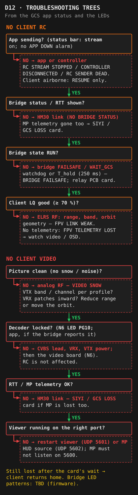
Type any term to filter.
| Term | Full Name | Description |
|---|---|---|
AHRS | Attitude and Heading Reference System | Computes aircraft attitude (roll, pitch, yaw) by fusing IMU, GPS and compass data. ArduPilot uses EKF3 as its AHRS backend. |
EKF | Extended Kalman Filter | Mathematical filter that fuses all sensor inputs to produce a best-estimate of position, velocity and attitude. EKF3 is the current ArduPilot standard (AHRS_EKF_TYPE=3). |
IMU | Inertial Measurement Unit | Sensor package containing accelerometers and gyroscopes. Measures linear acceleration and angular rate. |
INS | Inertial Navigation System | Navigation using IMU data. In ArduPilot, INS parameters control accelerometer and gyro filtering and calibration. |
BARO | Barometer | Pressure sensor used to estimate altitude. Subject to temperature and wind effects. ArduPilot blends baro with GPS altitude. |
MAG | Magnetometer (Compass) | Measures magnetic field for heading reference. Must be calibrated and isolated from magnetic interference. |
ARSPD | Airspeed (sensor) | Pitot-static airspeed sensor. Measures differential pressure between pitot tube and static port to calculate indicated airspeed. |
TECS | Total Energy Control System | ArduPilot's fixed-wing throttle and pitch controller. Manages the tradeoff between kinetic energy (speed) and potential energy (altitude). |
NAVL1 | Navigation L1 Controller | Lateral guidance law used in fixed-wing AUTO mode. Controls heading to follow waypoints and loiter patterns. |
GCS | Ground Control Station | Software (Mission Planner, QGroundControl) used to plan missions, monitor telemetry and send commands to the aircraft. Mission Planner is this carrier's primary GCS and its failsafe heartbeat. |
MAVLink | Micro Air Vehicle Link | Lightweight messaging protocol used for communication between ArduPilot and GCS. Carries telemetry, commands and parameters. |
sysid | MAVLink system id | Identifies each MAVLink sender. Mission Planner uses 255 by default; no other program may send GCS heartbeats as 255 (S-02b). |
MAVLink Mirror | Mission Planner feature (Ctrl+F) | Copies MP's MAVLink stream to another program. The GCS app reads the carrier position this way, with "Write access" unticked. |
PID | Proportional Integral Derivative | Control algorithm. ArduPilot uses PID controllers for attitude stabilisation — P reacts to current error, I accumulates over time, D damps rapid changes. |
QuadPlane | Multirotor + Plane hybrid | ArduPilot firmware mode for VTOL fixed-wing aircraft. Combines multirotor VTOL capability with fixed-wing cruise. Parameters prefixed with Q_. This aircraft is a tri tilt-rotor (Q_FRAME_CLASS 7). |
FS | Failsafe | Automated response to a loss of signal or low battery. On this carrier only SIYI / GCS loss (RTL after 5 s) and battery critical trigger an action. |
HDOP | Horizontal Dilution of Precision | Measure of GPS positional accuracy based on satellite geometry. Lower is better. The arming limit is a param-file value (VERIFY). |
SITL | Software In The Loop | Simulation mode where ArduPilot runs on a PC without real hardware, for testing and development (e.g. the S-01a and Q-mode RTL tests). |
SBUS | Serial Bus | Futaba RC protocol for connecting receivers to flight controllers. Inverted UART at 100kbps. |
CRSF | Crossfire Serial (TBS protocol) | High-speed bidirectional serial RC protocol used by TBS Crossfire and ExpressLRS. The relay bridge drives the ELRS TX module with single-wire CRSF at 400 000 baud. |
WP | Waypoint | A geographic point defined by latitude, longitude, and altitude that the aircraft navigates to in AUTO mode. |
| Mode | Full Name | Description |
|---|---|---|
QHOVER | Quadplane Hover | VTOL hover mode with altitude hold. Throttle controls climb/descent rate. Used for takeoff and landing on this aircraft. |
QLOITER | Quadplane Loiter | VTOL GPS position hold. Aircraft hovers at a fixed point. GCS-only on this aircraft. |
QSTABILIZE | Quadplane Stabilise | VTOL mode with attitude stabilisation but manual throttle. More demanding to fly than QHOVER. |
FBWA | Fly-By-Wire A | Fixed-wing mode. Bank and pitch are limited to safe angles. Throttle manual. Not used by any failsafe on this aircraft. |
FBWB | Fly-By-Wire B | Fixed-wing mode with altitude hold. Elevator controls climb/descent rate. Used for transition and cruise on this aircraft. |
AUTO | Autonomous Mission | Aircraft executes a pre-loaded waypoint mission. Used for relay loiter on this aircraft. |
GUIDED | Guided Mode | GCS sends real-time position targets. Carrier Pilot uses this for orbit adjustments during relay phase. |
RTL | Return to Launch | Aircraft climbs to RTL_ALTITUDE (above home) and flies back to the home position. Triggered manually or by the SIYI / GCS failsafe. |
LOITER | Loiter | Fixed-wing mode. Aircraft circles a point at fixed altitude and radius. |
MANUAL | Manual | Direct RC passthrough — no stabilisation. Ground-only on this aircraft. Used for servo checks. |
QLAND | Quadplane Land | VTOL auto-land at the current position. Triggered by the battery critical failsafe, and by a failed transition: Q_TRANS_FAIL_ACT = 0 → QLand per ArduPlane source (VERIFY). |
| Term | Full Name | Description |
|---|---|---|
Client | Client drone | The analog FPV drone flown through the relay (any analog FPV drone). Each one is a client profile in Tools → PROFILES. |
Relay PCB | Relay printed circuit boards | The two stacked boards on the carrier: the net/RC board and the video board. |
Net/RC board | Network and RC board | Holds the KSZ8795 switch, the W5500 and the G0 bridge. Owns every external Ethernet and CRSF connection. |
Video board | — | Holds the CVBS decoder and the N6. Turns the client's analog video into H.264 RTP on UDP 5600. |
Bridge | RC bridge | W5500 + G0: receives rc_up on UDP 5770 and sends CRSF to the ELRS TX module. States BOOT / WAIT_GCS / START / RUN / FAILSAFE. |
N6 | STM32N657 | Video board MCU with a hardware H.264 encoder; sends RTP. |
G0 | STM32G030 | Bridge MCU on the net/RC board: UDP RC in, CRSF out, timed to the ELRS module; configures the switch. |
W5500 | WIZnet W5500 | Hardwired UDP/IP Ethernet chip; the RC endpoint on switch port P2. |
KSZ8795 | Microchip 5-port Ethernet switch | P1 HM30 · P2 W5500 · P3 camera · P4 spare · P5 N6 (RMII). Port VLANs, four priority queues, per-port rate limiting. |
RMII | Reduced Media-Independent Interface | MAC-to-MAC link with a 50 MHz reference clock between switch port P5 and the N6, through the board-to-board connector. |
BT.656 | ITU-R BT.656 | Digital video bus from the decoder to the N6: 8 data lines plus pixel clock, sync codes embedded in the data. |
CVBS | Composite Video Baseband Signal | Analog composite video. In the relay: VRX → CVBS → decoder on the video board (SMA or JST-GH input). |
PAL / NTSC | Analog video standards | PAL: 50 fields/s, encoded 704 × 288 per field. NTSC: 59.94 fields/s, encoded 704 × 224 (or 240). Both are supported, set per client. |
Field vs frame | — | An interlaced frame is two fields. The relay encodes each field as one picture, so it adds about one field time (PAL 18.4 ms, NTSC 15.3 ms) instead of a frame time. |
H.264 | Video codec | The N6 encodes H.264 Baseline at a constant bitrate, slice by slice. |
RTP | Real-time Transport Protocol | Carries the client video over UDP (H.264 payload, RFC 6184; payload type 96, 90 kHz clock) to UDP 5600 at the GCS. |
RTSP vs RTP | — | RTSP sets up a stream on request (the carrier IP camera: rtsp://192.168.144.26:8554/main.264). The client video is plain RTP sent to a fixed port — no RTSP session; the viewer just listens. |
SDP | Session Description Protocol | A small text file describing an RTP stream. client-video.sdp (port 5601) lets mpv open the client video. |
rc_up | RC packet | 36-byte GCS → bridge packet: magic 'RC', version, flags (bit 0 = CAM_ENABLE), sequence, time stamp, 16 channels × 11 bit, CRC-16. Sent at 200–250 Hz. |
CAM_ENABLE | Camera enable flag | Bit 0 of rc_up flags: switches the carrier camera port P3 on or off within one packet. Default off; forced off when the GCS stream is lost. |
CRSF frame | — | One CRSF message. The RC frame is 26 bytes (EE 18 16 + 22 bytes of channels + CRC-8, poly 0xD5), about 0.65 ms at 400 kbaud. |
ModelID | CRSF model id command | Sent three times by the bridge in START, so the TX module uses the client's model match id. |
Timing frame (0x3A) | ELRS timing / sync frame | Sent by the ELRS TX module to its handset: packet period and offset. The bridge steers its send timing so the offset goes to about 0. |
T_hold | Hold time | Time without a valid rc_up after which the bridge goes FAILSAFE and stops sending CRSF (start value 250 ms). |
ELRS TX module | — | The ExpressLRS transmitter on the relay's CRSF port: RadioMaster Nomad (default) or a DBR4 flashed as TX. Band set per client. |
Binding phrase | ELRS binding phrase | Text set on the TX module and each client receiver; matching phrase = bound. Set once — no per-flight bind. |
Model match | ELRS model match | The receiver only accepts a TX using the same model id, so the relay can only control the matching client. |
Packet rate | ELRS packet rate (Hz) | Air packets per second; sets the RC update interval and range. Per client profile. |
Gemini | ELRS Gemini | Transmits on two frequencies at once (the Nomad has two LR1121 radios). Helps only if the client receiver is Gemini-capable. |
LQ | Link Quality | Percentage of ELRS packets received (uplink and downlink). The app alarms below 70 %. |
RSSI dBm | Received signal strength | Received power in dBm, per antenna (1RSS / 2RSS). Negative; closer to 0 is stronger. |
VLAN | Virtual LAN | Port-based VLANs in the relay switch: P2, P3 and P4 reach only P1 (P3/P4 also P5 if needed), so camera traffic never reaches the RC bridge. |
QoS / 802.1p | Quality of Service / Ethernet priority | Ordering traffic by priority (802.1p is the Ethernet priority tag). The relay switch orders P1 egress: RC status → client video → camera. |
GCS app | GCS companion app | Windows app in this repo (gcs/): RC sender, bridge and client status, alarms, camera toggle, session log, read-only local API on 127.0.0.1:47800. |
RESUME | RESUME (client airborne) | The GCS app start path for a client that may be flying: arm switch ARMED, live preview, typed confirmation. Never a normal start for an airborne client. |
RC uplink | — | GCS app → HM30 → bridge → ELRS TX module → client. |
Video downlink | — | Client VTX → carrier VRX → video board → HM30 → GCS. |
SSE | Server-Sent Events | Live status stream of the GCS app API (/api/v1/events), used by the Tools LINK tab and the map. |
| Term | Full Name | Description |
|---|---|---|
ESC | Electronic Speed Controller | Converts flight controller PWM/DSHOT signals into motor power. One per motor (3 on the carrier). |
FC | Flight Controller | The autopilot computer running ArduPilot firmware. Controls all flight surfaces and motors. |
BEC | Battery Elimination Circuit | Voltage regulator that steps battery voltage down to 5V (or other) to power FC and servos. |
PWM | Pulse Width Modulation | Traditional RC servo/ESC signal. Pulse width between 1000–2000µs represents min–max command. |
DSHOT | Digital Shot | Digital ESC protocol. More precise and noise-resistant than PWM. No calibration required. |
UART | Universal Asynchronous Receiver-Transmitter | Serial communication interface. Used to connect GPS, telemetry radios, ELRS receivers, and other peripherals to the FC. |
I2C | Inter-Integrated Circuit | Two-wire serial bus used for short-range peripherals such as compass and airspeed sensors. |
CAN | Controller Area Network | Robust serial bus used for ESCs (UAVCAN/DroneCAN) and advanced peripherals. |
LiPo | Lithium Polymer | Rechargeable battery chemistry used in UAVs. Nominal cell voltage 3.7V, full charge 4.2V, storage 3.8V. |
6S | 6-cell LiPo | Six LiPo cells in series. Nominal 22.2V, full 25.2V, critical 22.2V on this aircraft. |
mAh | Milliampere-hour | Battery capacity unit. Higher mAh = more energy stored. |
HDMI | High-Definition Multimedia Interface | Digital audio/video interface. Not part of the relay video chain (the video board encodes the CVBS signal directly); the FPV Pilot may use HDMI goggles on the GCS laptop. |
JST-GH | JST GH connector | Small locking connector used on the relay PCB for CRSF, camera and spare Ethernet (4-pin) and CVBS (2-pin). |
XT30 | XT30 power connector | Relay PCB power input (6–26 V) and the Nomad's supply input. |
| Term | Full Name | Description |
|---|---|---|
ELRS | ExpressLRS | Open-source long-range RC link. Extremely low latency. Carrier backup control on 915 MHz; client RC on any ELRS band (868 / 915 / 2.4 GHz, or Gemini) set per client. |
HM30 | SIYI HM30 | The digital IP radio between the ground (mast) and the carrier: MAVLink, RC UDP, client video and the IP camera. Primary carrier link. |
RF | Radio Frequency | Electromagnetic signals used for wireless communication. All RC links, video links and telemetry are RF systems. |
RSSI | Received Signal Strength Indicator | Measure of received signal power. Higher (less negative) RSSI = stronger link. |
TX | Transmitter | The device sending an RF signal. Also used to refer to a handheld RC radio controller. |
RX | Receiver | The device receiving an RF signal. Connects to the flight controller and decodes RC commands. |
VTX | Video Transmitter | Device that transmits analog or digital video over RF. On the client: analog, band per client (5.8 GHz default). |
VRX | Video Receiver | Device that receives RF video. On the carrier: band-agnostic, dual patch antennas facing inward; its CVBS output feeds the video board. |
RTSP | Real Time Streaming Protocol | Network protocol for streaming video. Used for the carrier IP camera (.26) in Mission Planner's GStreamer source. |
UDP | User Datagram Protocol | Connectionless network protocol. Used for MAVLink telemetry (UDPCI), RC (rc_up, port 5770) and the client video (RTP, port 5600). |
UDPCI | UDP Client Input | Mission Planner connection type. MP acts as UDP client, connecting to a known IP:port. |
MHz | Megahertz | Unit of frequency. 868MHz and 915MHz are sub-GHz ELRS bands. 5800MHz (5.8GHz) is the default client video band. |
GHz | Gigahertz | 1GHz = 1000MHz. 2.4GHz is an ELRS band; 5.8GHz the default analog video band. |
IP | Internet Protocol | Network addressing standard. The laptop, the HM30 units and the relay devices share the 192.168.144.x subnet. |
FPV | First Person View | Flying a drone using a live video feed from a camera on the aircraft, rather than direct visual observation. |
Fresnel zone | — | The ellipse around the line of sight that must be clear for full signal. Lower frequencies need a larger clearance. |
Nkom | Norwegian Communications Authority | Regulates radio spectrum use (bands, power, duty cycle) — separate from the aviation authorisation (Q14). |
| Term | Full Name | Description |
|---|---|---|
VTOL | Vertical Takeoff and Landing | Aircraft that can take off and land vertically, like a helicopter, but also fly efficiently in fixed-wing mode. |
REL | Relative (to home) | Altitude above the home position (set when the carrier is armed). RTL_ALTITUDE and mission altitudes on this aircraft are REL. |
AGL | Above Ground Level | Height above the terrain directly beneath the aircraft. Over rising terrain REL ≠ AGL. |
MSL | Mean Sea Level | Standard altitude reference. Not used for mission altitudes on this aircraft (they are REL). |
BVLOS | Beyond Visual Line of Sight | Operation where the aircraft is flown beyond the range of unaided visual observation. Requires special authorisation in most jurisdictions. |
VLOS | Visual Line of Sight | Standard operating requirement — pilot must be able to see the aircraft with unaided eyes at all times. |
NOTAM | Notice to Airmen | Official notice containing information about airspace restrictions, hazards, or changes. Must be checked before every flight. |
RTH | Return to Home | Automated function where the aircraft flies back to its launch/home point. Equivalent to RTL in ArduPilot; on a Betaflight client the flight mode shows RTH (GPS Rescue). |
PIC | Pilot in Command | The person with final authority and responsibility for the operation of the aircraft. Called "Carrier Pilot" in this manual. |
CG | Centre of Gravity | The point at which the aircraft balances. Incorrect CG causes pitch instability and can prevent safe flight. |
THR | Throttle | Power control input. In ArduPilot parameter names (e.g. THR_FAILSAFE, TRIM_THROTTLE). |
m/s | Metres per second | SI unit of speed. ArduPilot uses m/s internally for all speed values. |
This system requires two trained operators working co-located with verbal communications only. No radio or earpiece between pilots — both must be within normal speaking distance throughout the sortie.
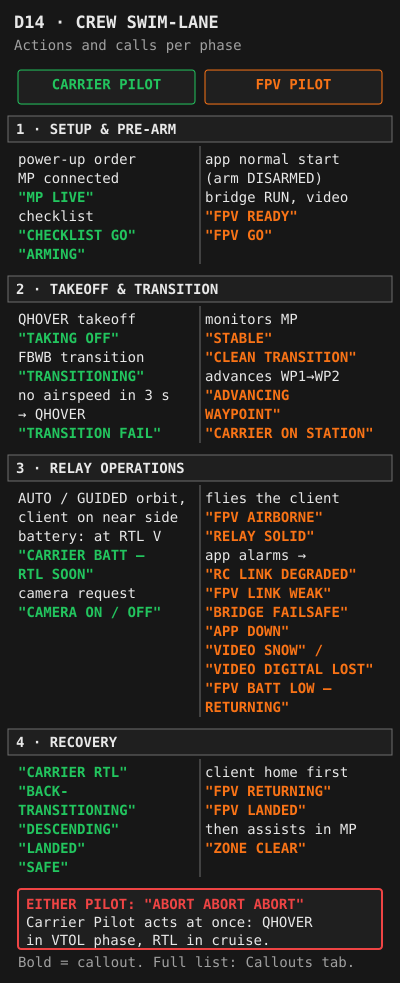
| Area | Minimum Standard |
|---|---|
| Fixed-wing RC | Comfortable manual flight of a fixed-wing aircraft — can hold level flight, turn, and land without assistance. Simulator hours accepted: 50h+ fixed-wing recommended. |
| VTOL operations | 5 independent VTOL flights with full transition cycle (QHOVER → FBWB → cruise → back-transition → VTOL_LAND) before first relay sortie. |
| Mission Planner | Can load, verify and edit a mission. Can send GCS mode commands. Can read all key telemetry: airspeed, altitude, battery voltage, RSSI, flight mode. Knows MP is the carrier's heartbeat: never closes MP in flight, laptop sleep disabled (S-02a). |
| Failsafe intent | Can explain: only SIYI / GCS loss triggers a carrier failsafe (RTL after 5 s, any mode); losing the 915 MHz backup beyond close range is expected and needs no action. |
| Emergency procedures | All emergency cards on the Emergency tab known without reference to this manual. Can identify a transition failure within 3 seconds. |
| Carrier controller | Familiar with the 3-position switch assignment (QHOVER / FBWB / AUTO) and left-button RTL, and that both work only within close range. |
3 consecutive flights: QHOVER arm → climb → FBWB transition → AUTO cruise → back-transition → VTOL_LAND. No aborts. Demonstrates battery management (manual RTL initiated at 23.0V or above).
Successfully uploads a 7-waypoint mission, verifies waypoint altitudes (REL), and sends a GCS mode command during an actual flight.
Verbally walks through all emergency cards with a qualified observer. No notes permitted. Observer confirms all actions are correct.
First relay operation conducted with a qualified observer present (not the FPV Pilot). Observer may not intervene except for safety.
| Area | Minimum Standard |
|---|---|
| FPV quad experience | Comfortable flying in Angle/GPS mode. Can hold stable position and hover at altitude for extended periods. Must have GPS-mode experience — not acro-only. |
| IP-video latency | Has flown with the relay's IP video, which is delayed by roughly 200 ms or more (estimate; measured value TBD — relay-design test 2). Flies slower and anticipates more than on direct analog video. |
| GCS companion app | Knows the start interlocks (normal start: arm switch DISARMED, throttle low), the two start paths (normal start for a client on the ground; RESUME (client airborne) with the arm switch ARMED and typed confirmations — never a normal start for an airborne client), how to read the status bar (bridge state, RTT, LQ, camera), and the callout for every app alarm. |
| EdgeTX radio | Can set up and check the GCS-RELAY model: internal and external RF modules OFF, USB joystick, arm switch on the agreed channel. |
| OSD literacy | Can read and respond to all OSD elements without hesitation: battery voltage, GPS sats, RSSI / link quality, home distance/direction, altitude, flight mode. |
| Client failsafe awareness | Knows the active client's failsafe (Reference client #1: GPS Rescue — activates after 2.5s link loss, climbs 30m, returns home at 100m REL at 7.5 m/s — return altitude with CURRENT_ALT: VERIFY). Keeps hands off during a rescue; when the link returns, stick input above the threshold ends the rescue — only ever deliberately. |
| Callout discipline | Has practised all callouts with the Carrier Pilot on the ground. Calls must be timely and use agreed phrasing — no improvisation during flight. |
| Link check | Can confirm, solo, before carrier takeoff: GCS app normal start, bridge RUN, client linked (binding phrase / model match), video in the viewer. |
Practise the client failsafe by stopping the GCS app stream: first on the bench (props off), then in a safe flight test at a safe altitude (relay-design test 6). Observe the full autonomous return and landing without touching the sticks. Record the time to failsafe.
On the bench with the simulator (--sim --sim-armed, key R): hold the arm switch ARMED, read the live preview, type RESUME (and THROTTLE at minimum throttle). Explain why a normal start would disarm an airborne client.
Completes the link check without assistance and confirms the client video in the viewer before carrier takeoff.
Runs through the full sortie callout script with the Carrier Pilot in a ground briefing, including the app alarms and the camera protocol. Both pilots agree on phrasing for all critical calls.
First relay sortie with qualified observer. Observer monitors callout discipline and response to any abnormal events.
Required before every sortie, regardless of crew experience level. Both pilots must agree on go/no-go before any equipment is powered.
Both pilots walk through the uploaded mission: launch point, transition corridor, relay altitude, client operating area (inside both the video and the RC coverage), return profile.
Check weather tab. Both pilots agree. If either pilot is not satisfied — no flight.
Name the most likely emergency for today's conditions (e.g. wind = transition failure). Agree on abort criteria and the camera plan for the sortie.
Confirm both pilots can hear each other clearly from their operating positions before committing to flight.
A client is any analog FPV drone flown through the relay. Its control and video pass through the carrier: RC from the GCS app over the HM30 to the relay's ELRS TX module, video from its VTX to the carrier's VRX. The carrier's ArduPlane FC has no knowledge of the client; the GCS app sees the client only through its CRSF telemetry.
- Analog VTX on a band the carrier's VRX is set to (band per client; 5.8 GHz default).
- ELRS receiver on the band of the ELRS TX module fitted to the relay (868 / 915 / 2.4 GHz; Gemini only if the receiver is Gemini-capable), with the same binding phrase and its own model match id.
- CRSF between receiver and FC.
- A defined failsafe: GPS Rescue recommended; "drop" acceptable only in cleared areas. Total failsafe time through the relay: TBD — relay-design test 6.
- Telemetry enabled if available, with a non-zero ELRS telemetry ratio — needed for client status and alarms in the GCS app. If the telemetry UART is shared with another function, Betaflight sends telemetry only when armed.
- Video standard known (PAL or NTSC) and stored in the profile.
- Arm switch on the channel the GCS app checks (default CH5) and throttle on the configured channel.
One row per client, from the shared profiles (edit in Tools → PROFILES). The active client drives the checklists, emergency cards and frequency table.
| Group | Datapoints | App alarm |
|---|---|---|
| Link (ELRS RX) | Uplink RSSI per antenna, uplink LQ and SNR, RF mode, TX power, downlink RSSI / LQ / SNR | FPV LINK WEAK (LQ < 70 %) |
| GPS | Position, ground speed, heading, altitude, satellites | FPV SATS LOW |
| Battery | Voltage (pack, or per cell with report_cell_voltage), current, consumed mAh, remaining % | FPV BATT LOW |
| Attitude | Pitch, roll, yaw | — |
| Flight mode | Mode string: !FS! failsafe, RTH, ANGL, … with disarmed suffix * ready, ! arming disabled, ? GPS Rescue configured but no fix | FPV FAILSAFE · FPV RTH · FPV RESCUE NOT READY |
The project's current client, configured and flown independently of ArduPlane. Values below are from its Betaflight configuration (docs/FPV_betaflight_dump.txt) and the previous manual.
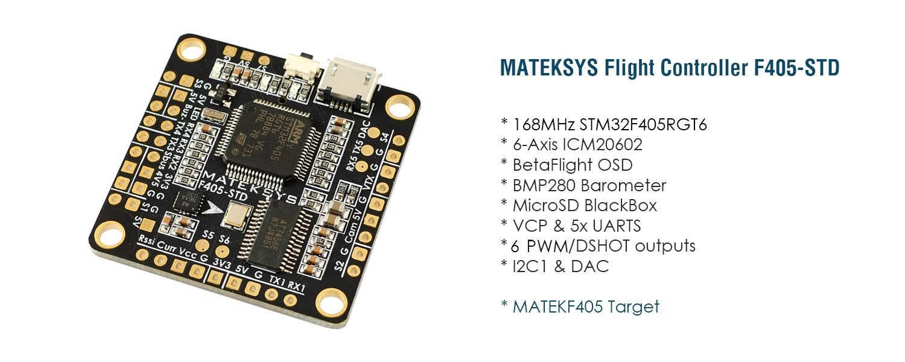
| Item | Value |
|---|---|
| Size | 7" (profile default) — the previous manual also called it a 5" quad: VERIFY |
| Flight controller | Matek F405 STD (clone) · Betaflight 4.5.2 |
| Battery | 6S 1300mAh LiPo |
| VTX | Raceband R5 · 5806 MHz · 25mW (constant — same power armed and disarmed) |
| RX | ELRS 2.4GHz · CRSF protocol · linked to the relay's ELRS TX module by binding phrase / model match (set once) |
| Video standard | TBD — PAL or NTSC |
| Motors | 1960KV · 14-pole · DSHOT300 · bidirectional DSHOT enabled |
| Gyro / rates | ACTUAL rate type · 67°/s max rate all axes |
| GPS | uBlox · 10Hz update · Galileo enabled · AIRBORNE_1G flight model |
| Blackbox | SD card · 1/2 sample rate · all channels logged |
| Level | Pack voltage | Per cell | Action |
|---|---|---|---|
| LiPo full charge | 25.2V | 4.20V | Same chemistry limit as the carrier pack |
| Betaflight "full" detection | 24.6V | 4.10V | vbat_full_cell_voltage = 410 — Betaflight's threshold for a full pack, not a charge target |
| OSD warning | 21.0V | 3.5V | Call "FPV BATT LOW — RETURNING" and land immediately (app alarm FPV BATT LOW) |
| Absolute minimum | 19.8V | 3.3V | BF minimum cell voltage — retire pack if reached in flight |
Failsafe procedure is set to GPS-RESCUE. When the RC uplink is lost — the bridge goes silent, the ELRS TX module stops — the client autonomously returns to its own home point, set when the client was armed.
| Parameter | Value | Implication |
|---|---|---|
| Activation delay | 2.5s | 1.5s stage 1 + 1s stage 2 before rescue triggers — plus the relay part (T_hold, TX module reaction): total TBD — test 6 |
| Minimum satellites | 8 | Below 8 sats, GPS Rescue will NOT activate — client descends on failsafe throttle instead |
| Altitude mode | CURRENT_ALT | Climbs 30m above wherever the client is when the link is lost. VERIFY — Betaflight 4.5 docs: the return altitude below applies to FIXED_ALT |
| Return altitude | 100m | Cruises home at 100m above the client's launch point (VERIFY — with CURRENT_ALT this may not apply) |
| Return speed | 7.5 m/s | Horizontal return ground speed |
| Descent start | 20m from home | Begins descent when within 20m of home horizontally |
| Descent rate | 1.5 m/s | Slow controlled descent |
| Landing phase | 4m | Landing phase from 4 m (gps_rescue_landing_alt = 4 in the dump) — not a confirmed motor cut. VERIFY — Betaflight 4.5 docs |
| Min start distance | 15m | Won't activate if already within 15m of home — descends in place |
| Throttle range | 1100–1700 | Hover estimate: 1300 |
GPS Rescue diagram is drawn from the client profile — if this text stays, the page scripts did not load.
| OSD Element | Trigger | Callout |
|---|---|---|
| Battery voltage | Below 21.0V (3.5V/cell) | "FPV BATT LOW — RETURNING" |
| GPS satellites | Below 8 sats | "FPV SATS LOW" — GPS Rescue may not work |
| Link quality | LQ below 70% or RSSI below -90dBm | "FPV LINK WEAK" |
| Home distance | Approaching max intended range | Situational awareness — call if unexpectedly far |
| Flight mode | Any unexpected mode change | "FPV MODE CHANGE — [mode name]" |
| Altitude | Higher than expected / approaching terrain | Carrier Pilot awareness — call if >50m above planned operating alt |
Maintenance is tracked by flight count using the Battery Log on the Tools page. Pre-flight and post-flight inspections are covered in the operational checklists and are not repeated here.
| Item | Action | Reject if... |
|---|---|---|
| Props (all 3: M1, M2, M4) | Inspect leading edges and tips for nicks, chips, or cracks. Gently flex each blade — no delamination or crunch. | Any nick deeper than 1mm, visible crack, or delamination — replace the prop |
| Motor shafts | Hold the prop and try to wobble the shaft laterally on all 3 motors. Spin by hand — should turn smoothly with no grit. | Any lateral play, grinding, or rough rotation |
| Tilt servos | Move tilt arms through full 0–80° range with power off. Check for slop at both ends and mid-travel. Listen for any mechanical scraping. | More than ~2° of slop, any binding, or audible grinding |
| Battery strap | Pull test — strap must not slip under firm hand tension. Check velcro face condition. | Any slippage or significant velcro degradation |
| Pitot tube | Visual check — tube clear, not bent or cracked at root, static port not blocked. | Any blockage, crack, or loose mount |
| Item | Action | Reject if... |
|---|---|---|
| ESC heat | Immediately after a flight, check each ESC by touch. Warm is normal. Too hot to hold finger = investigate wiring, cooling, and throttle logs. | Any ESC too hot to hold — do not fly again until root cause found |
| All connectors | Check XT60 main connector, all JST / XT30 sub-connectors, balance leads. Look for black marks (arcing), loose fit, or melted plastic. | Any arcing marks, loose connector, or melted housing |
| Relay PCB mount | Mount secure, vibration isolation intact, boards seated on the board-to-board connector. | Loose mount, damaged isolation |
| Relay connectors | All JST-GH connectors locked (CRSF, camera, spare, CVBS); HM30 Ethernet and XT30 seated. | Any unlocked or damaged connector |
| Ethernet leads (P3 camera, P4 spare) | JST-GH Ethernet leads intact; twisted pairs kept twisted up to the connector; TX+/TX−/RX+/RX− pinout. | Damaged insulation, untwisted pairs, wrong pinout |
| Relay shield / heat | Shield can (if fitted) seated; no heat discolouration on either board. | Discolouration, smell, loose shield |
| CRSF lead and ELRS TX module | CRSF lead secure; module mount secure; module antenna not cracked or kinked. | Loose lead or mount, damaged antenna |
| VRX patches and cables | Patches facing inward, mounts secure, cables not kinked. | Kinked cable, cracked patch, wrong orientation |
| Wing joins | Check wing bolt snugness (snug, not loose). Try to rock wing panel against fuselage — there should be no play. | Any wing movement relative to fuselage |
| Item | Action |
|---|---|
| Control surface pushrods | Check all rod ends (aileron, elevator, rudder) for axial play. Rotate each through full travel. Any play = replace or tighten rod end. |
| Motor bell screws | Check prop mounting screws on all 3 motors are torqued. Apply fresh threadlock to any that have been repeatedly loosening. |
| Tilt motor mounting frame | Inspect for cracks around screw holes. Check for heat discolouration on motor cans and ESC housings. |
| Flight controller mount | Check foam dampeners — not crushed, split, or delaminating. All FC connector ports fully seated. |
| GPS module | Check GPS mast for physical damage. Verify compass calibration offsets are stable compared to previous records. |
Interval: TBD — owner to set. Repeat with the carrier on the bench, props off, and record the results in the firmware log.
| Relay-design test | Pass criterion |
|---|---|
| 5 — Independence: N6 held in reset, reflashed, video domain power-cycled, P3 flooded with broadcast traffic | Zero dropped CRSF frames |
| 9 — Camera on/off: camera at its cap, toggle CAM_ENABLE, repeat the video latency test with the camera on | FPV latency unchanged; camera traffic on P1 stops within one RC packet of switching off |
Record every change, with the date. Where the log is kept: TBD — owner to decide.
| Date | ArduPlane param file | GCS app | Bridge (G0) fw_ver | Video board (N6) | Protocol ver | ELRS TX module | Tests re-run |
|---|---|---|---|---|---|---|---|
| TBD | TBD | TBD | TBD | TBD | 1 (PROPOSAL) | TBD | TBD |
| Item | Action | Reject if... |
|---|---|---|
| Props | Inspect and flex all blades. Check prop nut torque. | Any nick, crack, or looseness |
| Motor bell screws | Check all motor mounting screws. Check prop nut lock nuts. | Any looseness — re-torque and apply threadlock |
| GPS module mount | Check GPS puck for secure mounting. Vibration cracks foam mounts over time. | GPS puck movement, cracked mount, loose cable |
| VTX antenna | Check the VTX antenna connector. Check antenna not cracked or bent sharply at base. | Loose SMA/MMCX connector, cracked antenna body |
| Frame arms | Inspect arm-to-body joints for cracks — the highest-stress point in any impact. | Any crack — replace arm before next flight |
| When | Action |
|---|---|
| After every flight | Inspect for puffing, heat, unusual smell. At rest (30 min after flight): all cells within 0.05V of each other. |
| Storage ≥48h | Store at 22.8V (3.8V/cell) — optimal SoC for longevity. Never store below 21.0V (3.5V/cell) or above 25.2V (full charge). Note: 22.2V (BATT_CRT) is an operational voltage, not a storage target. |
| Charge rate | Maximum 1C (7A). Preferred 0.5C (3.5A) for longevity. |
| Retire when | Any cell imbalance >0.1V at rest, visible puffing at any state of charge, capacity below ~6000mAh measured, or any over-discharge below 19.8V (3.3V/cell). |
| When | Action |
|---|---|
| After every flight | Inspect for puffing. OSD warning triggers at 21.0V — land before this in relay ops. |
| Storage ≥48h | Store at 22.8V (3.8V/cell). Small packs puff quickly if stored discharged — 1300mAh cells are less tolerant of deep discharge than high-capacity packs. |
| Charge rate | Maximum 1C (1.3A). Do not exceed 2C charge on 1300mAh packs. |
| Retire when | Visible puffing at any state, cell imbalance >0.1V, or noticeably elevated internal resistance versus new. |
Complete all items below before next flight. Log the incident with date, description, and any repairs made in the Battery Log notes field.
| Item | Check |
|---|---|
| All involved props | Replace immediately — never re-use props from a prop strike even if they look undamaged |
| Motor shafts | Check all shafts for any bend — a bent shaft means motor replacement, not continued use |
| Tilt servo linkages | Full tilt mechanism check: rods, rod ends, servo horns, servo gears |
| Airframe structure | Full visual — new cracks especially around servo mounts, wing roots, motor mounts |
| Relay PCB | Mount, connectors and Ethernet leads; power up on the bench and confirm bridge RUN and client video before flight |
| Battery | Inspect for impact damage or puffing — retire if any doubt |
| FC bench test | Power up on bench — confirm all sensor readings nominal before returning to flight |
The mission must be planned and uploaded before arriving on site wherever possible. Review all items below before committing to a flight day.
| Item | Check |
|---|---|
| Airspace | NOTAMs checked. No active TFR, restricted area, or CTR conflict. Check for temporary airspace (events, emergency operations, glider areas). |
| Radio spectrum | Bands and powers of every link permitted (Nkom) — TBD (Q14); see RF & Comms → Frequency table. |
| Terrain | Identify the highest terrain between the launch site, the relay loiter point, and the client's operating area. Relay altitude must clear this by at least 30m. Mission altitudes are REL (above home): over rising terrain add the terrain height above the launch point. |
| Landing zone | Identify and mark the exact VTOL landing point. Clear 5m radius, level, firm surface. GPS accuracy is ±2m — size the marked zone accordingly. |
| Obstacles | Map any structures or trees near the mission path. The transition corridor from WP1 to WP2 must be free of obstacles up to at least 60m above the ground. |
| Line of sight | Carrier Pilot must maintain VLOS to the carrier during takeoff and landing. Note where the carrier will disappear beyond visual range during relay phase. |
The client's operating area must lie inside both the client video coverage and the client RC coverage around the carrier's orbit — the intersection of the two. Each depends on its band, power and antennas (client profile and link profiles). Use the coverage MAP for both, per site.
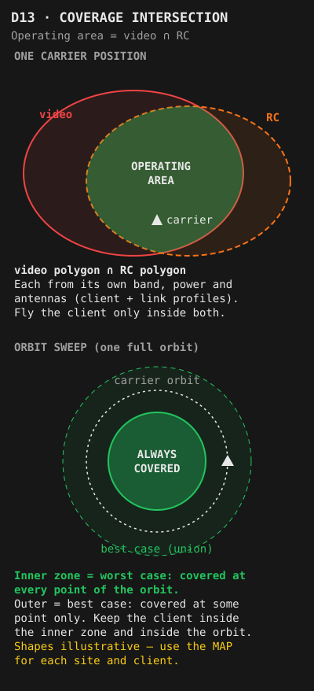
The carrier must maintain RF line-of-sight simultaneously to the ground station and to the client's operating area. Altitude is the primary tool.
| Terrain between carrier and ground | Recommended relay altitude |
|---|---|
| Open flat ground, distance <1km | 60–80m |
| Low rolling terrain (<20m relief) | 80–100m |
| Moderate terrain (20–50m relief) | 100–140m |
| Significant terrain or urban (>50m obstacles) | Requires site-specific analysis — do not estimate |
150–250m loiter radius works well for relay geometry while allowing orbit adjustments. Smaller radii tighten turns and increase bank angle — reduce radius in calm conditions only. Check the radius against the coverage MAP for the client's VTX power.
Centre the orbit over the client's operating area centroid. The carrier should have the client on its near side at all times — keeps both RF links as short and direct as possible.
If the carrier passes directly between the ground station and the client, both RF links may experience a brief null. Plan orbit direction to minimise time in this geometry.
All altitudes are REL — relative to home unless stated otherwise. ArduPilot sets home when the carrier is armed, so arm at the physical launch point. Over rising terrain REL is not the height above the ground. Verify in Mission Planner 3D view before upload.
| WP | Type | Altitude (REL) | Planning notes |
|---|---|---|---|
WP1 | VTOL_TAKEOFF | 20–30m | Place at the exact physical launch position (home is set where the carrier is armed). Height sufficient to clear ground obstacles before transition begins. |
WP2 | WAYPOINT | 50–80m | Transition safety altitude. Position 100–200m from launch along the transition direction — into wind. Co-pilot advances mission here after confirming clean transition. Ensure 300m+ of clear airspace beyond for acceleration. |
WP3 | LOITER_TO_ALT | Relay altitude | Autonomous climb to relay altitude. Place over or near the client's operating area. Fully autonomous — no pilot action until altitude reached. Set LOITER_TO_ALT heading=1 so aircraft exits toward WP4 automatically. |
WP4 | WAYPOINT | Relay altitude | Initial orbit centre for relay ops. Carrier Pilot orbits here manually as needed during the sortie. |
WP5 | LOITER_TO_ALT | 30–40m | Autonomous descent to approach altitude. Position 400m+ upwind of landing zone. Aircraft descends while loitering — fully autonomous. Do not interrupt. |
WP6 | WAYPOINT | 20–25m | Slope approach point — on the final approach path to WP7, ideally into-wind. Creates a stable approach angle for back-transition. |
WP7 | VTOL_LAND | 0m (ground) | Exact landing target. Aircraft enters VTOL descent at this point and descends vertically. GPS accuracy ±2m — size landing zone accordingly. |
One rule: transition into wind — airspeed builds fastest. Avoid a tailwind transition. Place WP2 so that the WP1 → WP2 leg points into wind.
The corridor from WP1 to WP2 must be free of obstacles up to at least 60m above the ground. The aircraft gains altitude slowly during the VTOL→FW transition — this is the most vulnerable phase.
If the transition has not completed within 4s, ArduPlane runs Q_TRANS_FAIL_ACT = 0: QLand at the current position (VERIFY against the firmware version). The pilot acts first: no airspeed build within 3s → QHOVER. Plan WP2 altitude so a QLand or QHOVER over the corridor is safe.
The aircraft travels approximately 100–130m forward at cruise speed during the 10s back-transition. Plan WP5→WP6 to account for this before vertical VTOL descent begins at WP7.
| Condition | Effect | Mitigation |
|---|---|---|
| 0–5 m/s surface wind | Minimal impact across all phases | Normal mission profile |
| 5–8 m/s | VTOL drift increases. Hover battery draw increases. | Increase WP2 altitude to 60–80m. Transition and land directly into wind. Monitor battery closely. |
| >8 m/s or gusts >10 m/s | VTOL stability significantly degraded. Loiter orbit drifts downwind. Q_ASSIST_SPEED triggers at 9 m/s drawing higher current from VTOL motors. | No-go per T2 limits. Abort or relocate to a sheltered site. |
| Wind shear (calm surface, elevated wind) | Aircraft may encounter significantly different wind at transition altitude. Can cause unexpected pitch upset during transition. | Increase WP2 altitude. Watch airspeed through transition carefully. Abort at first sign of pitch instability. |
| Item | Verify |
|---|---|
| Waypoint count | Exactly 7 WPs for standard mission. Confirm in Mission Planner waypoint list. |
| WP1 position | Matches physical launch point within 5m. Home is set where the carrier is armed — arm at the launch point. VTOL_LAND (WP7) should be within 10m of WP1. |
| All altitudes relative | All WP altitudes REL (relative to home) — not MSL, not terrain. Check MP altitude frame and units. |
| WP3 exit heading | LOITER_TO_ALT heading=1 so aircraft exits toward WP4 automatically when relay altitude is reached. |
| WP7 landing point | GPS-verified against physical marker. Clear 5m radius in all directions. |
| Mission verify round-trip | Download mission from FC after upload — compare against planned to confirm successful write. |
| Active waypoint selection | If no co-pilot for WP1→WP2 advance, set starting WP to WP2 — WP1 must NOT be the active waypoint. |